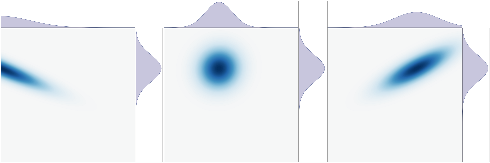
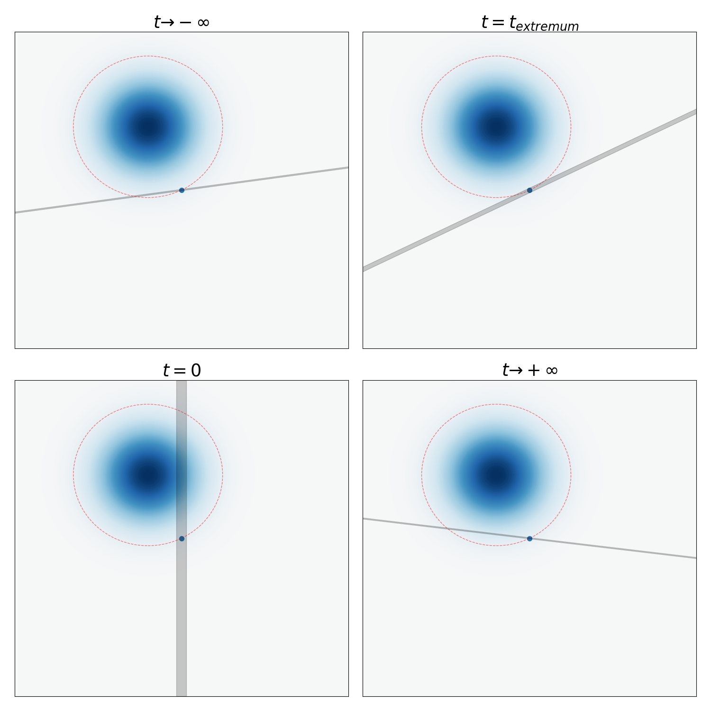
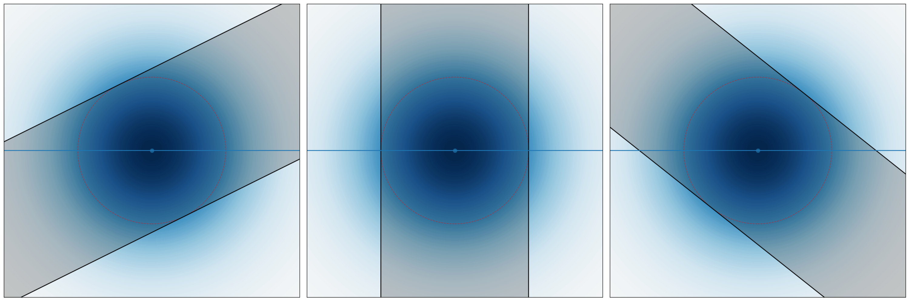
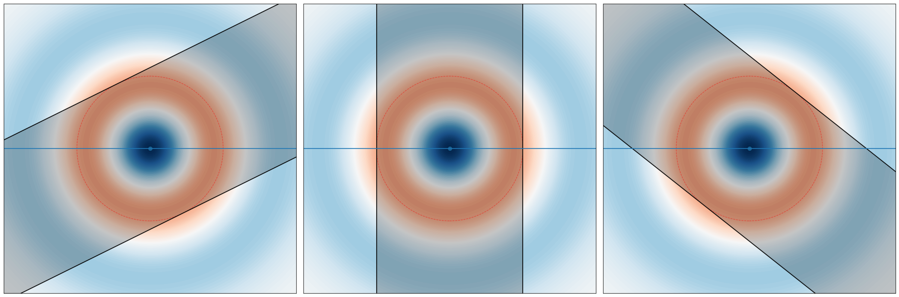
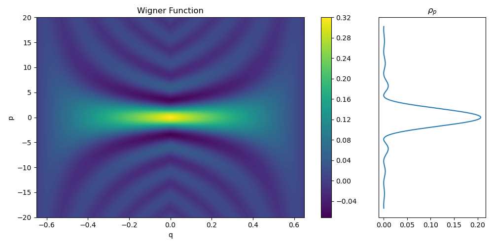

Warning: this note is particularly messy. I’m not sure if it is useful for anyone, but I’m putting it out there in case it is useful.
Quantization
What is quantization?
First, some definitions:
- a classical physics theory consists of several parts:
- A smooth manifold with some extra structure on it. This is the arena on which physics happens. For example, the phase space is a smooth \(2n\)-manifold with something special on it, called a Poisson bracket. This manifold is called the “underlying geometry”.
- Some functions defined on the manifold. These functions are typically real-valued, but can also be tensor-valued, such as in continuum mechanics. They are called the “observables”.
- A set of partial differential equation on that smooth manifold. These are typically called the “equations of motion”. This set of equations must be compatible with the “extra structure” of the underlying geometry.
- A dictionary with two columns. On the left column are the mathematical structures defined above. On the right column are the physically real structures that can be seen in a lab.
- a quantum physics theory is less clear, because there are competing but equivalent conventions. In the standard convention (von Neumann, 1932), it is similar to the above, except that instead of functions defined on the manifold, we have linear operators defined on a Hilbert space.
- to quantize a classical physics theory is to produce a quantum physics theory containing a free constant \(\hbar > 0\), such that the theory somehow reduces to the classical physics theory at the \(\hbar \downarrow 0\) limit.
- a quantization scheme is an algorithm for quantizing.
There are many quantization schemes, because of several impossibility theorems telling you that there is no perfect quantization of the classical physics theory of even a single particle moving on a straight line. I mean, is it really such a big surprise? If there is a perfect quantization, would it still be a surprising quantum mechanics…?
The simplest examples are found by canonical quantization, which is not a single quantization scheme, but rather, a style for quantizing. It typically involves explicitly computing with a fixed set of coordinates \(p_i, q_i\) in phase space. This style is the one taught to undergrads.
A more abstract style is geometric quantization, which typically involves manipulating phase space in the coordinate-free language of modern differential geometry. It is further abstracted to deformation quantization, which typically involves abstract algebra with many brackets and stars. Typically they start with a geometric quantization, and abstract out the axioms and properties, then start doing abstract algebra on it. Think of it as how Hilbert started with Euclid’s geometry and then went on to say
One must be able to say at all times–instead of points, straight lines, and planes–tables, chairs, and beer mugs.
As a side note, a field quantization is a quantization where the input classical physics theory has infinite-dimensional state space.
See (Gustafson and Sigal 2020, chap. 4) for details.
| Object | CM | QM |
|---|---|---|
| state space | \(\mathbb{R}^n \times \mathbb{R}^n\) with Poisson bracket | \(L^2 (\mathbb{R}^n)\) and commutator |
| evolution of state | path in phase space | path in \(L^2 (\mathbb{R}^3)\) |
| observable | real function on state space | self-adjoint operator on state space |
| result of measuring observable | deterministic | probabilistic |
| object determining dynamics | Hamiltonian function \(H(t, q, p)\) | Hamiltonian (Schrödinger) operator \(\hat H(t)\) |
| canonical coordinates | functions \(q_{1:n}, p_{1:n}\) | operators \(\hat q_{1:n}, \hat p_{1:n}\) |
Canonical
The most commonly used and widely taught quantization is the canonical quantization. In this, the classical physics is the physics of a single particle in \(\mathbb{R}^n\). Its phase space is \(\mathbb{R}^{2n}\), with canonical coordinates \((q_{1:n}, p_{1:n})\), and the standard symplectic structure. This is the one taught to every student in a first course in Hamiltonian mechanics. Classical observables are polynomial functions in \(q_{1:n}, p_{1:n}\).
In canonical quantization, each quantized classical observable is a map of type \(f \mapsto \hat f\), where \(f\) is a function of type \(f: \mathbb{R}^{2n} \to \mathbb{R}\), and \(\hat f\) is a linear operator of some kind. The defining feature of canonical quantization is that, whatever \(\hat f\) should be, the canonical commutation relations are satisfied:
\[ \begin{aligned}{} [\hat q_j, \hat p_k] &= i\hbar \delta_{jk}, \\ [\hat q_j, \hat q_k] &= 0, \\ [\hat p_j, \hat p_k] &= 0. \end{aligned} \]
The two most famous canonical quantizations are:
- Heisenberg matrix quantization: \(\hat f\) is a Hermitian square matrix with infinitely rows and columns.
- Schrödinger wavefunction quantization: \(\hat f\) is a self-adjoint operator on \(L^2(\mathbb{R}^n)\), the L2 space of \(\mathbb{R}^n\) with Lebesgue measure.
Heisenberg matrix quantization
In 1925, Heisenberg was thinking deeply about problems with atomic spectra, and suddenly got a serious attack of pollen allergy. When aspirin and cocaine did not help, he retreated to Heligoland where nothing grew. There, his mental gestation bore fruit:
One evening I reached the point where I was ready to determine the individual terms in the energy table, or, as we put it today, in the energy matrix, by what would now be considered an extremely clumsy series of calculations. When the first terms seemed to accord with the energy principle, I became rather excited, and I began to make countless arithmetical errors. As a result, it was almost three o’clock in the morning before the final result of my computations lay before me. The energy principle had held for all terms, and I could no longer doubt the mathematical consistency and coherence of the kind of quantum mechanics to which my calculations pointed. At first, I was deeply alarmed. I had the feeling that, through the surface of atomic phenomena, I was looking at a strangely beautiful interior, and I felt almost giddy at the thought that I now had to probe this wealth of mathematical structures nature had so generously spread out before me. I was far too excited to sleep, and so, as a new day dawned, I made for the southern tip of the island, where I had been longing to climb a rock jutting out into the sea. I now did so without too much trouble, and waited for the sun to rise.
This was the Heisenberg matrix quantization. Consider the following matrices:
\[ P=\begin{bmatrix} 0 & 1 & 0 & 0 & \cdots \\ 0 & 0 & 2 & 0 & \cdots \\ 0 & 0 & 0 & 3 & \cdots \\ \vdots & \vdots & \vdots & \vdots & \ddots \end{bmatrix}, \quad Q=\begin{bmatrix} 0 & 0 & 0 & 0 & \ldots \\ 1 & 0 & 0 & 0 & \cdots \\ 0 & 1 & 0 & 0 & \cdots \\ \vdots & \vdots & \vdots & \vdots & \ddots \end{bmatrix} \]
They satisfy \([Q, P] = -I, [Q, P^\dagger] = 0\). Thus, by standard manipulations with the commutator bracket, we find that
\[ [zQ + z^* Q^\dagger, wP + w^* P^\dagger] = (-zw + z^*w^*) I \]
Thus, if we set \(z = w = \sqrt{-i\hbar/2}\), we would have two Hermitian matrices \(zQ + z^* Q^\dagger, wP + w^* P^\dagger\) satisfying the canonical commutator relations. This is the simplest example of Heisenberg matrix quantization.
Schrödinger wavefunction quantization
In a series of papers, Schrödinger in 1926 proposed the wavefunction quantization for a single particle (among other things). It is defined as follows:
\[ \widehat{q_j} \psi=q_j \psi, \quad \widehat{p_j} \psi=-i\hbar \frac{\partial \psi}{\partial q_j} \quad \text { for } \psi \in L^2(\mathbb{R}^n) \]
where \(\hbar\) is a positive constant.
Uniqueness
Heisenberg in 1925 proposed the matrix quantization, and Schrödinger in 1926 proposed the wavefunction quantization, and there was a brief confusion as to which is the “correct” one, but it was quickly shown to be equivalent. So both are currently called “canonical quantization”.
Indeed, it turns out under some reasonable assumptions, there exists only one canonical quantization. Such theorems are typically called Stone–von Neumann theorems. The following is the most famous:
Theorem 1 ((Neumann 1931)) Assuming that
- \(\hat p_k, \hat q_j\) are self-adjoint operators on a Hilbert space.
- \([\hat q_j, \hat p_k] = i\hbar \delta_{jk}\).
- The operators are irreducible over the Hilbert space.
Then there exists a unique representation up to unitary equivalence. In particular, Schrödinger wavefunction quantization and Heisenberg matrix quantization are equivalent.
Axiomatic
We can write down some axioms for quantization. First, some definitions:
- A classical observable is a function of type \(f: \mathbb{R}^{n} \to \mathbb{C}\). Here, \(\mathbb{R}^n\) should be thought of as the state space.
- A wavefunction is a nice1 function of type \(\psi: \mathbb{R}^n \to \mathbb{C}\).
- A quantum observable is a linear operator on wavefunctions.
- A quantization is a map from classical observables \(f\) to quantum observables \(\hat f\).
1 I’m pretty sure that being analytic, i.e. having a globally converging Taylor expansion, is nice enough.
With these definitions, we have the axioms of quantization:
- A1 (linearity): the correspondence \(f \mapsto \hat f\) is linear;
- A2 (von Neumann rule): for any nice function \(\phi: \mathbb{R} \rightarrow \mathbb{R}\) for which \(\widehat{\phi \circ f}\) and \(\phi\left(\widehat f\right)\) are well-defined, \(\widehat{\phi \circ f}=\phi\left(\widehat f\right)\); Here, “Nice” usually means polynomial, or analytic.
- A3 (Schrödinger): \(\hat q_j = q_j, \hat p_j = -i\hbar \partial_{q_j}\).
- A4 (bracket): \([\hat f, \hat g] = i\hbar \widehat{\{f, g\}}\), where \(\{f, g\} = \sum_i (\partial_{q_i}f \partial_{p_i} g - \partial_{p_i}f \partial_{q_i} g)\).
- A5 (identity): \(\hat 1 = 1\).
For example, it is clear that either A3 or A4 implies the canonical commutator relations \([\hat q, \hat p] = i \hbar\).
It is not obvious, but If \(X\) is self-adjoint linear operator that commutes with all \(q_j, -i\hbar \partial_{q_j}\) then it is \(aI\) for some \(a \in \mathbb{C}\). This result is best shown by representation theory, as a corollary for showing that the representation is irreducible.
Unfortunately, it turns out that most combinations of the axioms are impossible to satisfy under minor assumptions:
Theorem 2 (Impossibility theorems) If all polynomials of \(p, q\) of degree \(\leq 4\) must be quantized, and we allow all linear and quadratic functions in the von Neumann rule, then
- the axioms A123 are incompatible.
- the axioms A134 are incompatible.
- the axioms A24 are incompatible.
In the following proofs, let \(c = -i\hbar\). The statement of the theorem, as well as the proofs, came from (Ali and Engliš 2005).
By A1 and A2, we can calculate \[ \widehat{pq} = \frac 12 [(P+Q)^2 - P^2 - Q^2] = \frac{PQ+QP}{2} \]
Similarly, we can calculate \(\widehat{p^2q^2}\) in two ways. Their difference is
\[ \frac 14 (PQPQ + QPQP + PQQP + QPPQ - PPQQ - PPQQ - QQPP - QQPP) \]
Using \([Q,P] = i \hbar\) to simplify, we obtain the difference of \(\frac 34 \hbar^2 \neq 0\).
Since \(\{p_iq_i, p_i\} = p_i, \{p_iq_i, q_i\} = -q_i\), let \(s := \sum_i p_iq_i\), we have by A4,
\[ [\hat s, P_i] = -cP_i, \quad [\hat s, Q_i] = cQ_i \]
By A3, \(\frac{\sum_i P_iQ_i+Q_iP_i}{2}\) also satisfies the above two equations. Thus, \[ \hat s = \frac 12 \sum_i (P_iQ_i+Q_iP_i) + zI \]
for some constant \(z\).
Similarly, for each \(m = 1, 2, 3, 4\), \[ \widehat{\sum_i q_i^m} = \sum_i Q_i^m + z_m I \]
for some constant \(z_m\).
By A4, \[ [\widehat{\sum_i p_iq_i}, \widehat{\sum_j q_j^m}] = -c \widehat{\{\sum_i p_i q_i, \sum_j q_j^m\}} = cm \widehat{\sum_j q_j^m} \]
Previously, we have already found \(\widehat{\sum_i p_iq_i}, \widehat{\sum_j q_j^m}\) up to an additive identity, so plugging them back in, and using A4, we obtain \[ [\widehat{\sum_i p_iq_i}, \widehat{\sum_j q_j^m}] = cm \sum_j Q_j^m \]
Thus, \(\widehat{\sum_j q_j^m} = \sum_j Q_j^m\). Similarly, \(\widehat{\sum_j p_j^m} = \sum_j P_j^m\).
Since \(\{\sum_i p_i^2 , \sum_j q_j^3\} = -6 \sum_i q_i^2 p_i\), \[ 6c \widehat{\sum_i q_i^2 p_i} \stackrel{A4}{=} [\widehat{\sum_i p_i^2} , \widehat{\sum_j q_j^3}] = [\sum_i P_i^2, \sum_j Q_j^3] \stackrel{A3}{=} 3c\sum_i(P_i Q_i^2 + Q_i^2 P_i) \]
Thus \(\widehat{\sum_i q_i^2 p_i} = \frac 12 \sum_i(P_i Q_i^2 + Q_i^2 P_i)\). Similarly for \(\widehat{\sum_i q_i p_i^2} = \frac 12 \sum_i(P_i^2 Q_i + Q_i P_i^2)\)
Since \(\{\sum_i p_i^3, \sum_j q_j^3\} = -9\sum_i p_i^2 q_i^2\), \[ \widehat{\sum_i p_i^2 q_i^2 } = \frac{1}{9c} [\sum_i P_i^3, \sum_j Q_j^3] = \sum_i (Q_i^2 P_i^2+2 c Q_i P_i+\frac{2}{3} c^2) \]
Since \(\{\sum_i p_i^2q_i, \sum_j p_jq_j^2\} = -3 \sum_i p_i^2q_i^2\), \[ \widehat{\sum_i p_i^2 q_i^2 } = \frac{1}{3c} [\frac 12 \sum_i(P_i^2 Q_i + Q_i P_i^2), \frac 12 \sum_i(P_i Q_i^2 + Q_i^2 P_i)] = \sum_i (Q_i^2 P_i^2+2 c Q_i P_i+\frac{1}{3} c^2) \]
They differ by \(\frac n3 c^2\), contradiction.
This proof came from (Engliš 2002).
Though we no longer have homogeneity, we still have \(\widehat{t f} = t \hat f\) for constant \(t \in \mathbb C\), by A2.
\(\{p^k, q^m\} = -km p^{k-1}q^{m-1}\) for all \(k, m \geq 1\), so by A4, \(\widehat{p^{k-1}q^{m-1}} = \frac{1}{km c} [ P^k, Q^m]\).
By A4, \(PQ- QP = c\). Then, by combinatorics,
\[ P^k Q^m = \sum_{l=0}^k \binom{k}{l} \frac{m!}{(m-k+l)!} c^{k-l} Q^{m-k+l}P^l \]
This can be derived as a consequence of the general Leibniz rule. If we temporarily assume A3, then
\[ P^k Q^m = c^k \partial^k(q^m \cdot) = c^k \sum_{l=0}^k \binom{k}{l}\partial^{k-l}(q^m) \partial^l(\cdot) = \sum_{l=0}^k \binom{k}{l} \frac{m!}{(m-k+l)!} c^{k-l} Q^{m-k+l}P^l \]
Thus, \[ [P^k, Q^m] = \sum_{l=0}^{k-1} \binom{k}{l} \frac{m!}{(m-k+l)!} c^{k-l} Q^{m-k+l}P^l = \sum_{l=1}^k\binom{k}{l} \frac{m! c^l}{(m-l)!} Q^{m-l} P^{k-l} \]
Thus, \[ \widehat{pq} = \frac{[P^2,Q^2]}{4c} = \frac{2c^2 + 4cQP}{4c} = QP + c/2 \]
\[ \widehat{pq}^2 \stackrel{A2}{=} (QP + c/2)^2 = QQPP + 2cQP + c^2/4 \]
\[ \widehat{ppqq} = \frac{[P^3,Q^3]}{9c} = \frac{6 c^3+18 c^2 Q P+9 c Q^2 P^2}{9 c} = Q^2P^2 + 2cQP + 2c^2/3 \]
\[ \widehat{ppqq} - \widehat{pq}^2 = \frac{5}{12}c^2 \neq 0 \]
In summary, any 3 of A1234 are incompatible. If we only take 2 out of them, then
- 12: Not quantum enough, since \(\hbar\) does not appear at all. Indeed, we can set all operators to be commutative. The key property of non-commutativity is not enforced.
- 13: Trivial, since we can arbitrarily assign \(\widehat{p^m q^n}\) for the cases other than \((m,n) = (1,0), (0,1)\), then linearly extend.
- 14: This is the van Hove prequantization.
- 23: Possibly interesting.
- 24: Impossible.
- 34: Possibly interesting.
Because of the impossibility theorems, something must be given up. The two common ways of giving up are:
- Geometric quantization: do not quantize most of the classical observables, and optionally give up von Neumann axiom (A2).
- Deformation quantization: give up von Neumann axiom (A2), and relax the bracket axiom (A4) to only hold in the limit: \([\hat f, \hat g] = i\hbar \widehat{\{f, g\}} + o(\hbar)\).
Pseudo-differential operator
This section is skippable.
A differential operator \(P\) in position space become multiplication by a polynomial \(P(k)\) in momentum space: \[ P[u](x) = \frac{1}{(2\pi)^{n}}\int dk e^{i \braket{k, x}} P(k) \hat u(k) \]
If we allow for multiplication by more generic functions, and allow for the interaction between position and momentum, we get pseudo-differential operator: \[ P[u](x) = \frac{1}{(2\pi)^{n}}\int dk e^{i \braket{k, x}} P(x,k) \hat u(k) \]
DER. integral/differential operator
Consider the differential operator \[ P(D) = \sum_{a_1, \dots, a_n} c_{a_1, \dots, a_n} (-i\partial_1)^{a_1} \cdots (-i\partial_n)^{a_n} \]
Applying \(P\) to a function \(u\) can be done in Fourier space: \[ P[u](x) = \frac{1}{(2\pi)^n} \int d^n k d^n y e^{i \braket{k, x-y}} u(y) \sum_{a_1, \dots, a_n} c_{a_1, \dots, a_n} k_1^{a_1} \cdots k_n^{a_n} \]
More succinctly, let \(\alpha\) be the multiindex, and \(D^\alpha = (-i\partial_1)^{a_1} \cdots (-i\partial_n)^{a_n}\), then we have \[ P(D) = \sum_\alpha c_\alpha D^\alpha \]
and
\[ P[u](x) = \frac{1}{(2\pi)^n} \int d^n k e^{i \braket{k, x}} \hat u(k) P(k) = \frac{1}{(2\pi)^n} \int d^n k d^n y e^{i \braket{k, x-y}} u(y) P(k) \]
To solve the differential equation \(P[u] = f\), it needs only inversion
\[ u(x) = \frac{1}{(2\pi)^n} \int d^n k \frac{\hat f(k)}{P(k)} e^{i\braket{k,x}} = \frac{1}{(2\pi)^n} \int d^n k d^n y e^{i \braket{k, x-y}} \frac{ f(y)}{P(k)} \]
DEF. pseudo-differential operator
A pseudo-differential operator \(P\) on \(\mathbb{R}^n\) is an operator defined by
\[ P[u](x) := \frac{1}{(2\pi)^n} \int d^n k e^{i \braket{k, x}} \hat u(k) P(x, k) = \frac{1}{(2\pi)^n} \int d^n k d^n y e^{i \braket{k, x-y}} u(y) P(x, k) \]
where \(P(x, k)\) is a function of type \(\mathbb{R}^n \times \mathbb{R}^n \to \mathbb C\).
Given a pseudo-differential operator, it can be inverted as before to solve pseudo-differential equations \(P[u] = f\)
\[ u(x) = \frac{1}{(2\pi)^n} \int d^n k \frac{\hat f(k)}{P(k, x)} e^{i\braket{k,x}} = \frac{1}{(2\pi)^n} \int d^n k d^n y e^{i \braket{k, x-y}} \frac{ f(y)}{P(k, x)} \]
Star product
Zachos, Cosmas. “A survey of star product geometry.” Integrable Hierarchies and Modern Physical Theories. Dordrecht: Springer Netherlands, 2001. 423-435.
Ovsienko, V., and Claude Roger. “Deformations of Poisson brackets and extensions of Lie algebras of contact vector fields.” Russian Mathematical Surveys 47.6 (1992): 135.
Some notes on Weyl quantisation | What’s new
Setup
On a \(2n\)-dimensional symplectic structure, we fix some \(2n\) canonical coordinates \(q_{1:n}, p_{1:n}\). These two \(n\)-tuples are written as one big \(2n\)-tuple \(\xi_{1:2n}\) by \(\xi_{1:n} = q_{1:n}, \xi_{n+1:2n} = p_{1:n}\).
The symplectic matrices are written as
\[\omega_{ij} = \begin{bmatrix} & q_{1:n} & p_{1:n} \\ q_{1:n} & 0 & -I \\ p_{1:n} & I & 0 \end{bmatrix}\]
\[\omega^{ij} = \begin{bmatrix} & q_{1:n} & p_{1:n} \\ q_{1:n} & 0 & I \\ p_{1:n} & -I & 0 \end{bmatrix}\]
We use the Einstein summation convention: If an index is used twice in an expression, then it is summed over. It is not necessary for the index to appear once in the superscript and once in the subscript.
The Poisson bracket is defined by
\[\{f, g\} = \sum_i (\partial_{q_i}f \partial_{p_i} g - \partial_{p_i}f \partial_{q_i} g)\]
I know there are two conventions for the Poisson bracket, but this is my convention and I’m sticking to it. I think this is the more common convention in the literature.
Because I don’t want to type things out, if two vectors \(\tilde q, q\) are dot-producted like \(\tilde q \cdot q\), I would just write \(\tilde q q\). It saves me a little hassle, and actually rarely leads to problems!
The Fourier transform is defined by
\[ \tilde f(\tilde q) \int_{\mathbb{R}^n} f(q) e^{-i (\tilde q q)}d^n q,\quad f(q) = \frac{1}{(2\pi)^n}\int_{\mathbb{R}^n} \tilde f(\tilde q) e^{+i (\tilde q q)} d^n \tilde q \]
I know there are like, 4 conventions at least for the Fourier transform. So much hassle. The Dirac delta function, in this convention, becomes
\[\delta^n( q - q_0 ) = \frac{1}{(2\pi)^n} \int_{\mathbb{R}^n} e^{-i (\tilde q (q - q_0))}d^n \tilde q\]
The functions \(f, g\) are formal power series with complex coefficients in the variables \(q_1, \dots, q_n, p_1, \dots, p_n, t\). That is, \(f, g \in S := \mathbb C[[q^{1:n}, p^{1:n}, t]]\). The following is an example:
\[ \sum_{k=0}^\infty (k! q_1^k + k^2 p_2^k + t^{2k}) \]
The higher Poisson brackets are \(\{\cdot, \cdot\}_k\), where \(k = 0, 1, 2, \dots\). It will be shown later that \(\{f, g\}_0 = fg, \{f, g\}_1 = \{f, g\}\).
The star product2 \(f\star_t g\) is a binary operation, where \(t\) is a complex number. For each choice of \(t \in \mathbb{C}\) we have a different star product. It has many definitions, but we will define it as an exponential sum of the higher Poisson brackets:
2 Other names include: star product, Moyal star product, Weyl–Groenewold product, phase-space star product, and basically any combination thereof.
\[f\star_t g = \sum_{k=0}^\infty \frac{t^k}{k!} \{f, g\}_k\]
and then show the equivalence of the definitions.
The Moyal bracket3 is always defined as (Yes yes there are many definitions, you know the drill…):
3 Also called the sine bracket.
\[\{\{f,g\}\}_t := \frac{f \star_t g - g \star_t f}{2t}\]
If \(t\) is not written explicitly, then it is by default \(t = i\hbar /2\). In that case, we have
\[\{\{f,g\}\} := \frac{f \star g - g \star f}{i\hbar}\]
BTW, I think those people just really love the brackets. I have found the Lie bracket, the cosine bracket, the algebraic bracket, the Nijenhuis–Richardson bracket, the Schouten–Nijenhuis bracket, the Frölicher–Nijenhuis bracket, the Nambu bracket, the Gerstenhaber bracket, the Lagrange bracket, the Dirac bracket, the odd Poisson bracket, and so on. I think I’ll take my Poisson, my Lie, and my Moyal, and say good-day to the rest.
*Sing, Muses, who dwell in the halls of Olympus,
You are goddesses, you are everywhere, you know all things --
That govern the fields, the rings, the complex conjugations.
We who entangle blindly, we know nothing of --
how does Nambu commute? Who slakes the Leibniz?
The mass of theorems I could never tally, never name,
not even if I had ten tongues and ten mouths,
a tireless voice and the heart inside me bronze,
never unless you Muses of Olympus, half-sister of Athena
whose love is wisdom and war, sing, sing in memory
all who gathered under here. Now I can only tell
the shapes of the brackets, the brackets in all their numbers!*I actually got some mildly amusing further text out of grok-2-2024-08-13:
First, I speak of the Lie bracket, swift as Hermes in flight,
Born from the need to express motion in the abstract,
Its name echoes through the theorems, a warrior on the field of manifolds,
With each commutator, it reveals the hidden symmetries of space.
...
The Dirac bracket, a healer on the battlefield of constraints,
Mending the broken symmetries, restoring order,
In quantum realms and classical, it adjusts the rules,
A physician to the laws, making them whole again.The prompt I used is: “Write a mock-epic in exactly the same style as Homer’s Catalog of Ships. To get you started, here is how I started. Make sure to avoid rhyming, and focus on the meter instead.”.
Constructions
Axiomatic
Axioms of deformation quantization, to be proved below.
- \(f\star 1 = 1 \star f = f\)
- \((f \star g)^* = (g^*) \star (f^*)\)
- \(\{f, g\}_0 = fg\)
- (deformed canonical quantization) \(\{\{f, g\}\}_t = \{f, g\} + O(t^2)\).
Direct
The “Poisson biderivative” operator
\[\bar P = \sum_{i=1}^n \left(\overleftarrow{\partial_{q_i}} \cdot \overrightarrow{\partial_{p_i}}-\overleftarrow{\partial_{p_i}} \cdot \overrightarrow{\partial_{q_i}}\right) = \omega^{ij} \overleftarrow{\partial_{\xi_i}} \cdot \overrightarrow{\partial_{\xi_j}} \]
\[ \{f, g\}_k=f \bar P^k g \]
Tensor
Define two operators of type \(S \otimes S \to S \otimes S\):
\[ \begin{aligned} \Omega(f \otimes g) &= \sum_{k=1}^n \partial_{q^k} f \otimes \partial_{p^k} g - \partial_{p^k} f \otimes \partial_{q^k} g = \omega^{ij} \partial_{\xi_i} f \otimes \partial_{\xi_j} g \\ Tr(f \otimes g) &= fg \end{aligned} \]
\[\{f, g\}_k = (\operatorname{Tr}\circ \Omega^k)( f \otimes g)\]
In classical invariant theory, these are called transvectants, or hyper-Jacobians. (Ovsienko, Roger, 1992)
Symplectic
\(\Omega = \omega^{ij} \partial_i \wedge \partial_j\) is the dual bivector to the symplectic form \(\omega_{ij} d\xi^i \wedge d\xi^j\).
Weyl transform
Let the Weyl transform be \[\hat f := \frac{1}{(2\pi)^{2n}} \iint_{\mathbb{R}^{2n}} d^n \tilde q d^n \tilde p \; \tilde f(\tilde q, \tilde p) e^{i (\tilde q_j \hat q_j + \tilde p_j \hat p_j)}\]
where \(\hat q_j = (q_j \cdot), \hat p_j = -i\hbar\partial_{q_j}\) are operators satisfying the canonical commutator relations.
Then, the star product is uniquely defined by \(\widehat{f \star g} = \hat f \hat g\).
Fourier analysis
\[ f \star g= \frac{1}{(\pi \hbar)^{2n}} \int_{\mathbb{R}^{4n}} d^{2n} \zeta d^{2n} \zeta' f(\xi + \zeta) g(\xi + \zeta') e^{\frac{2i}{\hbar} \omega^{jk} \zeta_j \zeta_k'} \]
Basic properties
Proposition 1
\(\{f, g\}_k = (-1)^k \{g, f\}_k\)
\(\{\cdot, \cdot \}_k\) is invariant under symplectic transforms.
Proposition 2 (Multinomial expansion of the bracket) When \(n=1\), direct expansion shows that it has the form of a binomial expansion: \[ \begin{aligned} \{f, g\}_0 &= fg \\ \{f, g\}_1 &= (f_{q} g_{p} - f_{p} g_{q}) = \{f, g\} \\ \{f, g\}_2 &= (f_{qq} g_{pp} - 2 f_{pq} g_{pq} + f_{pp} g_{qq}) \\ \{f, g\}_3 &= (f_{qqq} g_{ppp} - 3 f_{qqp} g_{qpp} + 3 f_{qpp}g_{qqp} - f_{ppp} g_{qqq}) \\ & \cdots \\ \{f, g\}_k &= \sum_{\alpha + \beta = k} (-1)^{\alpha} \binom{k}{\alpha} (\partial_{q}^{\beta} \partial_{p}^{\alpha} f)(\partial_{p}^{\beta} \partial_{q}^{\alpha} g) \end{aligned} \]
And in general, it is a multinomial expansion. \[ \{f, g\}_k = \sum_{|\alpha| + |\beta| = k} (-1)^{|\alpha|} \binom{k}{\alpha, \beta} (\partial_{q}^{\beta} \partial_{p}^{\alpha} f)(\partial_{p}^{\beta} \partial_{q}^{\alpha} g) \]
where \(\alpha, \beta\) are multiindices.
\[\{f, g\}_k(q,p) = \left(\sum_i (\partial_{q_i}\partial_{p_i'} - \partial_{p_i}\partial_{q_i'}) \right)^k f(q, p)g(q', p') \Bigg|_{(q', p') = (q, p)} = (\omega^{ij}\partial_{\xi_i}\partial_{\xi_j'} )^k f(q, p)g(q', p') \big|_{(q', p') = (q, p)} \]
For example,
If \(f, g\) are polynomials of degree \(m, n\), then \(\{f, g\}_k\) is a polynomial of degree \(\leq m + n - 2k\).
\[\begin{aligned} \{q_i, q_j\}_k &= \begin{cases} q_iq_j , & k =0, \\ 0 & \text{else}\end{cases}; \\ \{p_i, p_j\}_k &= \begin{cases} p_ip_j , & k =0, \\ 0 & \text{else}\end{cases};\\ \{q_i, p_j\}_k &= \begin{cases} q_ip_j , & k =0, \\ \delta_{ij} & k = 1, \\ 0 & \text{else}\end{cases} \end{aligned} \]
Proposition 3 \[\begin{aligned} f \star_t g &= (\operatorname{Tr}\circ e^{t\Omega})( f \otimes g) \\ &= f e^{t \bar P} g \\ &= f \left(\prod_i e^{t \overleftarrow{\partial_{q_i}} \cdot \overrightarrow{\partial_{p_i}}} e^{-t\overleftarrow{\partial_{p_i}} \cdot \overrightarrow{\partial_{q_i}}} \right) g \end{aligned} \]
since the operators commute.
This allows formal expressions:
\[ \{\{f, g\}\}_t = \left(\operatorname{Tr}\circ \frac{\sinh^{t\Omega}}{t} \right)( f \otimes g) = f \frac{\sinh(t\bar P)}{t} g \]
For example, when \(n=1\),
\[ f \star_t g = fg + t \{f, g\} + \frac 12 t^2 (f_{qq} g_{pp} - 2 f_{pq} g_{pq} + f_{pp} g_{qq}) + \cdots \]
\[\begin{aligned} (f \star_t g)(q,p) &= f\left(q_1 + t\overrightarrow{\partial_{p_1}}, \dots, p_1 - t\overrightarrow{\partial_{q_1}}, \dots\right) g(q,p) \\ &= f(q,p) g\left(q_1 - t\overleftarrow{\partial_{p_1}}, \dots, p_1 + t\overleftarrow{\partial_{q_1}}, \dots\right) \\ &= f\left(q_1 + t\overrightarrow{\partial_{p_1}}, \dots, p\right) g\left(q_1 - t\overleftarrow{\partial_{p_1}}, \dots, p\right) \end{aligned} \]
and more generally, in any combination of the coordinates.
Differentiation \(\partial_{\xi_i}\) generates translation in \(\xi_i\). That is, \(e^{\partial_{\xi_i} t}\) is equivalent to translation by \(t\) in coordinate \(\xi_i\).
This is useful for evaluating the bracket of some Hamiltonians:
\[\{\{T(p) + V(q), \cdot\}\}_t = \frac{V(q + t\nabla_p) - V(q - t\nabla_p)}{2t} -\frac{T(p + t\nabla_q) - T(p - t\nabla_q)}{2t}\]
In particular, if \(T, V\) are both quadratic polynomials, then \(\{\{T + V, \cdot\}\}_t = \{T + V, \cdot\}\). That is, it simplifies to just the Poisson bracket.
Example evaluations
If \(f = e^{\sum_i (Q_i q_i + P_i p_i)} = e^{\Xi_i \xi_i}, g = e^{\sum_i (Q_i' q_i + P_i' p_i)} = e^{\Xi_i' \xi_i}\), then
\[ \begin{aligned} \{f, g\}_k &= \left(\sum_i (Q_i P_i' - Q_i' P_i) \right)^k fg \\ &= (\omega^{ij} \Xi_i \Xi_j')^k fg \end{aligned} \]
\[ \begin{aligned} f \star_t g &= e^{t \sum_i (Q_i P_i' - Q_i' P_i)} fg \\ &= e^{t \sum_i (Q_i P_i' - Q_i' P_i)} e^{\sum_i (Q_i+Q_i') q_i + (P_i+P_i') p_i} \\ &= e^{t\omega^{ij} \Xi_i \Xi_j'} e^{(\Xi_i + \Xi_i')\xi_i} \end{aligned} \]
By induction, the star product of any number of exponentials is
\[ f_1 \star_t \cdots \star_t f_N = e^{t\omega^{ij} \sum_{1 \leq k < l \leq N}\Xi_i^{(k)} \Xi_j^{(l)}}e^{\sum_{1 \leq k \leq N} \Xi_i^{(k)}\xi_i} \]
regardless of how the star product associates.
Taking partial derivative \(\partial_{Q}^{\alpha} \partial_{P}^{\beta}\partial_{Q'}^{\alpha'} \partial_{P'}^{\beta'} \big|_{Q,P,Q',P' = 0}\), we obtain \((q^{\alpha}p^{\beta})\star_t (q^{\alpha'}p^{\beta'})\).
In particular,
\[ q_i \star_t q_j = q_i q_j, \quad p_i \star_t p_j = p_i p_j, \quad q_i \star_t p_j = q_ip_j + \delta_{ij}t, \quad p_j \star_t q_i = q_i p_j- \delta_{ij}t \]
that is,
\[ \xi_i \star_t \xi_j = \xi_i \xi_j + \omega^{ij}t \]
In general, the star product is very difficult to evaluate. Other than the “planar-wave” exponentials given above, we can also evaluate the star product of spherical gaussians:
Proposition 4 (hyperbolic addition law) \[ e^{-\tanh (a) \frac{q^2 + p^2}{\hbar }} \star e^{-\tanh (b) \frac{q^2 + p^2}{\hbar }} = \frac{\tanh (a + b)}{\tanh (a) + \tanh (b)} e^{-\tanh (a+b) \frac{q^2 + p^2}{\hbar }} \]
Equivalently,
\[ \exp \left(-\frac{a}{\hbar}\left(q^2+p^2\right)\right) \star \exp \left(-\frac{b}{\hbar}\left(q^2+p^2\right)\right) = \frac{1}{1+a b} \exp \left(-\frac{a+b}{\hbar(1+a b)}\left(q^2+p^2\right)\right) \]
Poisson structure
Proposition 5 The Moyal bracket and the star product together make up a Poisson structure, that is,
- \(f\star_t 1 = 1 \star_t f = f\)
- \((f \star_t g)^* = (g^*) \star_t (f^*)\) when \(t\) is imaginary.
- The star product is associative.
(1). Direct calculation.
(2). \(Tr\Pi^k (f\otimes g) = (-1)^k Tr\Pi^k (g\otimes f)\)
(3). Because the star product is multilinear, it suffices to check associativity for exponential functions, which was already proven previously.
Proposition 6 (Jacobi-like identities) (1). For any \(m = 0, 1, \dots\),
\[ \sum_k \binom mk \{\{f, g\}_k, h\}_{m-k} = \sum_k \binom mk \{f, \{g, h\}_k\}_{m-k} \]
(2). The Moyal bracket contains only terms of order \(1, t^2, t^4, \dots\).
\[\{\{f, g\}\}_t = \sum_{k\text{ odd}} \frac{t^{k-1}}{k!} = \{f, g\} + \frac 16 t^2 \{f, g\}_3 + \frac{1}{120}t^4 \{f, g\}_5 + \cdots \]
In particular, with \(t=i\hbar /2\), \[ \{\{f, g\}\} = \{f, g\} + O(\hbar^2) \]
(3). (Jacobi identity) For any even \(m = 0, 2, \dots\),
\[\sum_{k \text{ odd}} \binom mk \left[\{f, \{g, h\}_k\}_{m-k}\right]_\circlearrowleft = 0 \] where the \(\circlearrowleft\) means cyclically permuting the three terms \(f, g, h\), as in the usual case of Jacobi identity. For example, when \(m=2\), it simplifies to \[\left[\{f, \{g, h\}\}\right]_\circlearrowleft\]
which is the Jacobi identity for the Poisson bracket.
(1). Expand \((f \star_t g) \star_t h = f \star_t (g \star_t h)\) in powers of \(t\), and match the coefficients.
(2). Expand, and note that \(\{\{ f, g \}\}_k = (-1)^k\{\{ g, f \}\}_k\).
(3). Expand the Jacobi identity for \(\{\{ \cdot, \cdot \}\}_t\).
Theorem 3 ((Ovsienko, Roger, p. 144)) The Moyal bracket is the unique (up to isomorphism) non-trivial deformation of the Poisson bracket in the class of Lie structures.
Fourier analysis
Theorem 4 (Fourier transform of the star product) \[(f \star g)(q, p) = \frac{1}{(\hbar \pi)^2} \int_{\mathbb{R}^4} dp' dp'' dq' dq'' f(q', p') g(q'', p'') \exp \left(\frac{2 i}{\hbar} ((qp' - pq') + (q'p'' - p'q'') + (q''p - p''q) ) \right) \]
I have not checked the following, but I think it is true.
\[(f\star g) (\xi) = \frac{1}{(\hbar \pi)^{2n}}\int d^{2n}\xi' d^{2n}\xi'' f(\xi') g(\xi'') \exp \left(\frac{2 i}{\hbar} ((qp' - pq') + (q'p'' - p'q'') + (q''p - p''q) ) \right) \]
Lemma 1 (lone star lemma) \[\int(f\star g) (q,p)dqdp = \int f(q,p) g (q,p)dqdp \]
(C. Zachos 2001) gave a geometric trick picture for the star product.
Let \(\vec r = (q, p)\), etc, then
\[ (\vec r' - \vec r) \wedge (\vec r'' - \vec r) = \vec r \wedge \vec r' + \vec r' \wedge \vec r'' + \vec r'' \wedge \vec r = (qp' - pq') +(q'p'' - p'q'') +(q''p - p''q) \]
This can be interpreted as twice the oriented area of a triangle, with orientation going in the direction of \(\vec r \to \vec r' \to \vec r''\). In this notation, we have
\[(f \star g)(\vec r) = \frac{1}{(\hbar \pi)^2} \int_{\mathbb{R}^4} d^2 \vec r' d^2 \vec r'' f( \vec r') g(\vec r'') \exp \left(\frac{4 i}{\hbar} A(\vec r , \vec r' , \vec r'') \right) \]
\[(f \star g \star h)(\vec r) = \frac{1}{(\hbar \pi)^2} \int_{\mathbb{R}^6} d^6 (\vec r', \vec r'', \vec r''') f( \vec r') g(\vec r'') h(\vec r''') \exp \left(\frac{4 i}{\hbar} A(\vec r , \vec r' , \vec r'') \right) \delta^2 (\vec r - \vec r' + \vec r''- \vec r''' ) \]
The Dirac delta in the integrand is a geometric restriction that forces the four vectors form a parallelogram.
\[\int_{\mathbb{R}^2} d^2 \vec r (f \star g \star h)(\vec r) = \frac{1}{(\hbar \pi)^2} \int_{\mathbb{R}^6} d^6 (\vec r', \vec r'', \vec r''') f( \vec r') g(\vec r'') h(\vec r''') \exp \left(\frac{4 i}{\hbar} A(\vec r , \vec r' , \vec r'') \right) \]
Quantum mechanics on phase space
Most of this came from a series of papers written by Zachos et al: (C. K. Zachos 2002; C. K. Zachos, Fairlie, and Curtright 2005; T. L. Curtright and Zachos 2012; T. Curtright, Fairlie, and Zachos 2014). There are not that many good textbooks on this.
Phase space quantum mechanics is most widely used in quantum optics. I found (Olivares 2012) to contain most of the formulas.
I feel like this paper would be useful for something…
- Tilma, Todd, et al. “Wigner functions for arbitrary quantum systems.” Physical review letters 117.18 (2016): 180401.
The problem of ordering
When Schrödinger, Heisenberg, etc proposed quantum mechanics, they found that position and momentum, which in classical mechanics are represented as real-valued functions \(q_{1}, \dots, q_n , p_{1}, \dots, p_n\) over phase space \(\mathbb{R}^{2n}\), must instead become self-adjoint linear operators \(\hat q_{1}, \dots, \hat q_n , \hat p_{1}, \dots, \hat p_n\) over an inner product space (Hilbert space).
Everyone agrees since (Heisenberg, 1925) and (Schrödinger, 1926) that \(\hat q, \hat p\) must be quantized, and must satisfy the canonical commutator relations. Then (von Neumann, 1931) proved that under mild assumptions, there is only one choice (up to Hilbert space isomorphism). This is the choice that (is isomorphic to the choice that) everyone learns in quantum mechanics nowadays:
\[ \hat q_i = (q_i \cdot), \quad \hat p_i = -i\hbar \partial_{q_i} \]
The problem is that people do not agree on how to quantize the other observables.
The problem of ordering is that \(pq = qp\) in classical mechanics, but \(\hat p \hat q \neq \hat q \hat p\) in quantum mechanics. Therefore, one must decide on how to convert \(pq\) to some \(\widehat{pq}\) in quantum mechanics, consistently.
Do we choose \(\hat q \hat p\), or \(\hat p \hat q\), or even something entirely different?
Weyl’s solution is to preserve the symmetry as much as possible, by using symmetric polynomials:
\[ \widehat{pq} = \widehat{qp} = \frac 12 (\hat q \hat p + \hat p \hat q) \]
and in general,
\[ \widehat{\prod_{j=1}^N \xi_{k_j}} = \frac{1}{N!} \sum_{\sigma \in S_N} \prod_{j=1}^N \hat \xi_{k_\sigma(j)} \]
That is, the quantum operator corresponding to a product is the symmetric product.
Weyl transform
The Weyl transform sends real-valued functions on phase space to self-adjoint linear operators. That is, it sends classical observables to quantum observables.
Let \(f : \mathbb{R}^{2n} \to \mathbb{C}\) be a nice function, then its Weyl transform is
\[ W[f] := \frac{1}{(2\pi)^{2n} } \int \tilde f(\tilde \xi) \exp\left({i \tilde \xi \cdot \widehat {\xi} } \right) d^{2n} \tilde\xi \]
The inverse Weyl transform4 is
4 Also called the Wigner map, or the Wigner transform.
\[ W^{-1} [\hat f](q,p) = \int d^n y e^{-ip \cdot y/\hbar}~\bra{q+y/2} \hat f \ket{q-y/2} \]
Proposition 7 (equivalent definitions of Weyl transform) \[ \begin{aligned} W[f] &= \frac{1}{(2\pi)^{2n} } \int f(\xi) \exp\left({i \tilde \xi \cdot (\widehat {\xi} - \xi) } \right) d^{2n} \xi d^{2n} \tilde\xi \\ &= \frac{1}{(2\pi)^{2n} } \int f(q,p) \prod_{j=1}^n\exp\left[{i (\tilde q_j (\widehat {q_j} - q_j) + \tilde p_j (\widehat {p_j} - p_j) ) } \right] d^{n} q d^{n} p d^{n} \tilde q d^{n} \tilde q\\ &= \left(\frac{2}{(2\pi \hbar)^{\frac 32}}\right)^n \int d^{2n}\xi d^{2n}\xi' f(q,p) \ket{q'} \bra{p'} e^{\frac{i}{\hbar}(q' \cdot p' - 2 (q' -q)\cdot (p'-p))} \end{aligned} \]
First is by the definition of the Fourier transform. Second is derived from the first because \(q_i, q_j\) commute, and \(p_i, p_j\) commute.
For the third one, By the Baker-Campbell-Hausdorff formula,
\[ \begin{aligned} \exp\left({i \tilde \xi \cdot (\widehat {\xi} - \xi) } \right) &= e^{\frac 12 i\hbar (\tilde q \cdot \tilde p) - i \tilde \xi \xi} e^{i \tilde q\cdot \hat q} e^{i \tilde p\cdot \hat p} \\ &= e^{\frac 12 i\hbar (\tilde q \cdot \tilde p) - i \tilde \xi \xi}\int d^n q' d^n p' \ket{q'} \bra{p'} e^{i (\tilde q \cdot q' + \tilde p \cdot p' + q' \cdot p' / \hbar)} \end{aligned} \]
Plug it into the first equation, and integrate out \(d^{n} \tilde q, d^n \tilde p, d^{n} q, d^n q\) one-by-one, using the Dirac delta trick of \(\int e^{i \tilde x x} d^n x = (2\pi)^n \delta^n(\tilde x)\).
Proposition 8 (equivalent definitions of inverse Weyl transform) \[ \begin{aligned} W^{-1} [\hat f](q,p) &= \int d^n y e^{-ip \cdot y/\hbar}~\bra{q+y/2} \hat f \ket{q-y/2} \\ &= \int d^n y e^{iq \cdot y/\hbar}~\bra{p+y/2} \hat f \ket{p-y/2} \\ &= \operatorname{Tr}\left[\hat f \int d^n y e^{-ip \cdot y/\hbar}~ \ket{q-y/2} \bra{q+y/2} \right] \\ &= \operatorname{Tr}\left[\hat f \int d^n y e^{i q \cdot y/\hbar}~ \ket{p+y/2} \bra{p-y/2} \right] \end{aligned} \]
Trivial.
Proposition 9 (special cases) Let \(f(q, p) = e^{i (\tilde \xi \cdot \xi)}\), then
\[ \tilde f(\tilde \xi') = (2\pi)^{2n} \delta^{2n}(\tilde \xi' - \tilde \xi), \quad W[f] = e^{i (\tilde \xi \cdot \hat\xi)} \]
For monomials,
\[ W\left[\prod_{j=1}^N \xi_{k_j}\right] = \frac{1}{N!} \sum_{\sigma \in S_N} \prod_{j=1}^N \hat \xi_{k_{\sigma(j)}} \]
In particular, if \(\prod_{j=1}^N \xi_{k_j}\) contains only commuting variables (that is, \(p_i, q_i\) do not simultaneously appear for each of \(i = 1, 2, \dots n\)), then
\[ W\left[\prod_{j=1}^N \xi_{k_j}\right] = \prod_{j=1}^N \xi_{j} \]
For any of the canonical variables \(\xi_j\), we let it go through the Fourier transform and then an inverse transform:
\[ \xi_j = \frac{1}{(2\pi)^{2n} } \int \tilde \xi_j(\tilde \zeta) \exp\left({i \sum_j \tilde \zeta_j \xi_j } \right) d^{2n} \tilde\zeta \]
Now, expand the exponent inside the integrand, but don’t allow \(\xi_j\) to commute with \(\xi_k\), then we obtain a formal power series consisting of terms like
\[ (\text{complex-valued function})(\tilde \zeta) \cdot (\text{some monomial in }\xi_j) \]
Now each complex-valued function coefficient integrates, leaving behind a complex-linear sum of monomials in \(\xi_i\).
Since only the coefficients of \(\xi_j\) remain, this means that doing the same formal manipulation with the Weyl transform would be nothing more than adding a hat \(\widehat{(\cdot)}\), giving us
\[ W[\xi_j] := \widehat{\xi_j} \]
In general, if we have a monomial function \(f := \prod_{j=1}^N \xi_{k_j}\), then
\[ \begin{aligned} f &= \frac{1}{(2\pi)^{2n} } \int \tilde f(\tilde \zeta) \exp\left({i \sum_j \tilde \zeta_j \xi_j } \right) d^{2n} \tilde\zeta \\ &=\sum_{M=0}^\infty \frac{1}{(2\pi)^{2n} } \frac{i^M}{M!}\int \tilde f(\tilde \zeta) \left( \sum_j \tilde \zeta_j \xi_j \right)^M d^{2n} \tilde\zeta \\ \end{aligned} \]
As before, all the coefficients integrate to zero, except for the terms that results in the monomial of \(f\). Such terms occur only in \(\left( \sum_j \tilde \zeta_j \xi_j \right)^N\), in the form of a sum:
\[ \sum_{\sigma\in S_N} \prod_{j=1}^N \tilde \zeta_{k_{\sigma(j)}} \xi_{k_{\sigma(j)}} \]
Now, the \(\prod_{j=1}^N \tilde \zeta_{k_{\sigma(j)}}\) part commutes, but the \(\prod_{j=1}^N \xi_{k_{\sigma(j)}}\) part does not. So we find that the coefficient in front of each \(\prod_{j=1}^N \xi_{k_{\sigma(j)}}\) is the same, all of which are \(\frac{1}{N!}\).
So far, we have defined by fiat a transform that we have called “the inverse Weyl transform”. However, we had better make sure it really is the inverse of “the Weyl transform”. We can now prove it.
Proposition 10 \[ W^{-1}[W[f]] = f \]
It suffices to prove this when \(f(q, p) = e^{i (\tilde \xi \cdot \xi)}\), since both \(W\) and \(W^{-1}\) are linear, and any function is the integral of some \(\int e^{i (\tilde \xi \cdot \xi)} \tilde f(\tilde \xi) d^{2n} \tilde \xi\), by Fourier transform.
\[ \begin{aligned} W^{-1}[e^{i (\tilde \xi \cdot \hat\xi)}](q,p) &= \int d^n y e^{-ip \cdot y/\hbar}~\bra{q+y/2} e^{i (\tilde q \cdot \hat q + \tilde p \cdot \hat p)} \ket{q-y/2}\\ &= \int d^n y e^{-ip \cdot y/\hbar}~\bra{q+y/2} e^{i \tilde q \cdot \hat q/2} e^{i \tilde p \cdot \hat p} e^{i \tilde q \cdot \hat q/2} \ket{q-y/2}\\ &= \int d^n y e^{-ip \cdot y/\hbar}~e^{i \tilde q \cdot (q + y/2)/2} e^{i \tilde q \cdot (q-y/2)/2} \bra{q+y/2} e^{i \tilde p \cdot \hat p} \ket{q-y/2}\\ &= \int d^n y e^{-ip \cdot y/\hbar}~e^{i \tilde q \cdot q} \delta^n(\hbar \tilde p + (q+ y/2) - (q - y/2) )\\ &= e^{i (\tilde q \cdot q + \tilde p \cdot p)} \end{aligned} \]
In the derivation, we used two facts: the Baker-Campbell-Hausdorff formula, and the fact that momentum is the generator for translation.
Proposition 11 Some statements I have not checked, but I heard they are correct:
- If \(\hat H = T(\hat p) + V(\hat q)\) for some analytic functions \(T, V\), then \(W[T(p) + V(q)] = \hat H\)
- \(W[f] W[g] = W[f \star g]\)
- \(\operatorname{Tr}( \hat A \hat B) =(2\pi \hbar)^{-n} \int AB d^n q d^n p\)
Theorem 5 (correspondence principle) If \(f\) is a polynomial of degree \(\leq 2\), and \(g\) is a polynomial, then
\[ [W[f] , W[g]] = i\hbar W[\{f, g\}] \]
This is an instance of the correspondence principle \([\hat f, \hat g] = i\hbar \widehat{\{f, g\}}\).
Proposition 12 (functional analysis properties of the Weyl transform)
- If f is a real-valued function, then \(\Phi [f]\) is self-adjoint.
- If f is an element of Schwartz space, then \(\Phi[f]\) is trace-class.
- \(\Phi [f]\) is a densely defined unbounded operator.
- The map \(\Phi [f]\) is one-to-one on the Schwartz space as a subspace of the square-integrable functions.
Proposition 13 (examples in \(n=1\) case.) For any \(a, b\in \mathbb{C}, n \in \mathbb{N}\), we have
\[ W[(a q + b p)^n] = (a \hat q + b \hat p)^n \]
\[ W[e^{i(a q + b p)^n}] = e^{i(a \hat q + b \hat p)^n} \]
(McCoy’s formula):
\[ W[ p^m q^n] = {1 \over 2^n} \sum_{r=0}^{n} {n \choose r} \hat q^r \hat p^m \hat q^{n-r}={1 \over 2^m}\sum_{s=0}^{m} {m \choose s} \hat p^s \hat q^{n}\hat p^{m-s} \]
Wave function transform
The Weyl transform, when applied to a density operator \(\hat \rho\), yields a function on phase space. This function is called a Wigner function5.
5 Or a Wigner quasiprobability distribution, or a Wigner distribution, or… you know how it is.
The wave function is transformed the same way as its density operator, but we need to divide by an extra factor of \((2\pi \hbar)^n\) for convenience.
\[ \begin{aligned} W_{\hat \rho} :=& \frac{1}{(2\pi \hbar)^n} W^{-1}[\hat \rho] \\ =& \frac{1}{(2\pi \hbar)^n}\int d^n y e^{-ip \cdot y/\hbar}~\braket{q+y/2|\psi} \braket{\psi | q-y/2} \\ =& \frac{1}{(2\pi)^n}\int d^n y e^{-ip \cdot y}~\braket{q+y\hbar /2|\psi} \braket{\psi | q-y\hbar /2} \\ =& \frac{1}{(2\pi )^n}\int d^n y e^{-ip \cdot y}~\psi(q+y\hbar/2) \psi(q-y\hbar/2)^* \end{aligned} \]
If \(\psi\) is given in momentum coordinates, then we have
\[ W(q, p) = \frac{1}{(2\pi)^n} \int e^{-i\braket{y, q}}d^ny \; \psi(p - \hbar y/2) \psi(p + \hbar y/2)^* \]
Note that \(W\) has units of \(\hbar^{-n}\).
In the quantum phase space, areas \(pq\) have units of \(\hbar\). By scaling both \(p, q\) by \(\sqrt{\hbar}\), we can by convention set \(\hbar = 1\). In more detail, define the new scaled positions and momenta by \((q', p') := (q / \sqrt{\hbar}, p / \sqrt{\hbar})\), then phase-space areas become dimensionless. The Wigner function scales by \(W'(q, p) = \hbar^n W(q, p)\), and the wavefunction scales by \(\psi'(q') = \hbar^{-n/4} \psi(q)\).
In these new units, the Wigner transform is
\[ W'(q', p') = \frac{1}{2\pi} \int_{\mathbb{R}^n} d^n y\; e^{-ip' y } \psi(q' + y/2) \psi(q' - y/2)^* \]
Proposition 14
- \(W\) is real.
- \(|\psi(q)|^2 = \int_{\mathbb{R}^n} W(q,p)d^n p\)
- \(|\psi(p)|^2 = \int_{\mathbb{R}^n} W(q,p)d^n q\)
- \(\int W(q, p) d^nqd^np = 1\).
- \(|W(q, p)| \leq (\pi \hbar)^{-n}\).
- Check \(W^* = W\).
(2, 3) Use the Fourier expression of Dirac delta: \(\delta(t-t_0) = \frac{1}{2\pi} \int e^{i\omega(t-t_0)}d\omega\).
Corollary of (2).
Cauchy–Schwarz inequality.
The position eigenstate has wavefunction \(\psi(q) = \sqrt{\delta^n(q-q_0)}\). However, if you plug it into the definition for \(W(q,p)\), you will discover that \(W(q, p)\) must be identically zero for \(q \neq q_0\), and also must be independent of \(p\). This then means \(W(q, p)\) should look something like \(C \delta^n(q-q_0)\) for some \(C \in \mathbb{R}\). But no matter what \(C\) you pick, it won’t allow \(\int W dq dp = 1\).
Proposition 15 (symmetries of \(W\)) Let \(\psi(q)\) be a wavefunction of a in position space \(\mathbb{R}^n\). We have:
- If we translate \(\psi\) by \(+\Delta q\), or equivalently, multiplying it by the operator \(e^{\Delta q \cdot \nabla_q}\), then we also translate its Wigner function by \(+\Delta q\).
- If we multiply \(\psi\) by the operator \(e^{+i \Delta p \cdot q/\hbar}\), then we also translate its Wigner function by \(+\Delta p\).
- If we multiply it by the Hamiltonian of the quantum harmonic oscillator \(e^{-i \hat H t/\hbar}\), where \(\hat H := \frac{{\hat p}^2}{2m} + \frac{1}{2} m \omega^2 {\hat q}^2\), then we rotate its Wigner function by \(\omega t\) around the ellipse with semiaxes \(\sqrt{1/m\omega^2}, \sqrt{m}\). That is, the new Wigner function satisfies \(W'(q, p) = W(q \cos(\omega t) - \frac{p}{m\omega} \sin(\omega t), q m \omega \sin(\omega t) + p \cos(\omega t))\).
We say that a Wigner function is pure iff it is the Wigner function of a pure state \(\hat \rho = \ket{\psi}\bra{\psi}\). We then have
Proposition 16 (properties of pure Wigner functions) \(W\) is pure iff \(W \star W = (2\pi \hbar)^{-n} W\), which you can remember by noting that \(F\) has units of \(\hbar^{-n}\), and that the units must agree on both sides.
Any linear operator that preserves the star product preserves purity of Wigner functions. That is, if \(F\) is a linear operator that satisfies \(F(W) \star F(W') = F(W \star W')\), then if \(W\) is pure, then so is \(F(W)\).
Translations and elliptic-rotations preserve the purity of Wigner functions.
The first one is proved by the general theorem that \(\widehat{W \star W'} = \widehat{ W} \widehat{ W'}\), where the \(\widehat{\cdot}\) denotes the Weyl transform. Pay attention to the fact that \((2\pi \hbar)^n\) constant appeared because the Wigner function was defined by scaling the Weyl transform by that constant.
The second one is a corollary of the first one.
The third one is a corollary of the symmetries of \(W\).
Proposition 17 Let \(\tilde W(x, y)\) be the Fourier transform of \(W\) on the momentum:
\[ \tilde W(x,y) := \int e^{i \braket{y,p}} d^n p W(x,p) \]
A function \(W(q,p)\) is the Wigner function of some wave function \(\psi(q)\) iff
\[ \partial_{x+\hbar y / 2} \partial_{x+\hbar y / 2} \ln \tilde W(x, y) = 0 \]
If \(W\) is the Wigner function of \(\psi\), then \(\tilde W(x,y) = \psi(x + \hbar y/2) \psi(x - \hbar y/2)^*\), so it is true.
Conversely, if \(\partial_{x+\hbar y / 2} \partial_{x+\hbar y / 2} \ln \tilde W(x, y) = 0\), then it separates in variables, giving
\[ \ln \tilde W(x, y) = f_+(x+\hbar y / 2 ) + C + f_- (x - \hbar y / 2) - C \]
for some \(f_+, f_-\), and any constant \(C\).
Given \(W(x, p, t)\), one can find the wavefunction through a two-step process. First, find the Fourier transform
\[ \begin{aligned} \widetilde{W}(x, y, t) & =\frac{1}{2 \pi \hbar} \int_{-\infty}^{+\infty} W(x, p, t) e^{i p y / \hbar} d p \\ & =\frac{1}{2 \pi \hbar} \psi^*\left(x-\frac{1}{2} y, t\right) \psi\left(x+\frac{1}{2} y, t\right) \end{aligned} \]
Second, select an arbitrary point \(x_0\) where \(\widetilde{W}\left(x_0, 0, t\right)\) does not vanish, and construct \(\psi\) by … (I’m pretty sure it requires just a few more lines now.)
Gaussians
Proposition 18 (Wigner function of a Gaussian wavepacket) \[ W(q,p) = \rho_{\mathcal N(q_0, \Sigma_q)}(q) \rho_{\mathcal N(p_0, \Sigma_p)}(p) \]
where \(\Sigma_q \Sigma_p = \frac 14 \hbar^2 I\) reaches the lower bound of the uncertainty principle allows.
Suppose we have a gaussian wave packet with mean \(q_0\) and variance \(\Sigma\), then its wave function is
\[ \begin{aligned} \psi(q) &= e^{i p_0 \cdot q} \sqrt{\rho_{\mathcal N(q_0, \Sigma)}(q)} \\ &= e^{i p_0 \cdot q} \sqrt{\frac{1}{(2\pi)^{n/2} (\det \Sigma)^{1/2}} e^{-\frac 12 (q-q_0)^T \Sigma^{-1} (q-q_0)}}\\ &= \exp\left[ \frac 14 (q-\mu)^T \Sigma^{-1} (q-\mu) + i \tilde q \cdot q - \frac 14 \ln \det \Sigma - \frac n4 \ln (2\pi) \right] \end{aligned} \]
\[ W(q,p) = \frac{1}{(\pi \hbar)^n}\int d^n y e^{-2ip \cdot y}~\psi(q+y) \psi(q-y)^* = \cdots = \rho_{\mathcal N(q_0, \Sigma)}(q) \rho_{\mathcal N(p_0, \hbar^2(4\Sigma )^{-1})}(p) \]
There is a more general theorem (T. Curtright, Fairlie, and Zachos 2014, 23):
Theorem 6 (uncertainty principle) For any wavefunction \(\psi\), the convolution of its Wigner function with any Gaussian satisfying \(\Sigma_p \Sigma_q \geq \frac 14 \hbar^2 I\) is everywhere non-negative. In other words, all negative parts of the Wigner function is small and jagged. We cannot find a large contiguous region where the Wigner function is negative.
Time-evolution
\[ \begin{aligned} \frac{\partial W(x, p, t)}{\partial t}= & -\frac{p}{m} \frac{\partial W(x, p, t)}{\partial x} \\ & -\int_{-\infty}^{+\infty} K\left(x, p^{\prime}\right) W\left(x, p+p^{\prime}, t\right) d p^{\prime} \end{aligned} \]
where the kernel \(K(x, p)\) is
\[ K(x, p)=\frac{1}{2 \pi \hbar^2} \int_{-\infty}^{+\infty}\left[V\left(x-\frac{1}{2} y\right)-V\left(x+\frac{1}{2} y\right)\right] \sin (p y / \hbar) d y . \]
Theorem 7 (Moyal’s evolution equation) \[ \partial_t W = \frac{H \star W - W \star H}{i\hbar} = \{\{H, W\}\} \]
Notice how similar it is to the classical Liouville equation \(\partial_t \rho = \{H, \rho\}\), and the von Neumann equation \(\partial_t \hat \rho = \frac{\hat H \hat \rho - \hat \rho \hat H}{i\hbar}\).
If \(\hat H = T(\hat p) + V(\hat q)\) for some analytic functions \(T, V\), then
\[ H = W^{-1}[\hat H] = T(p) + V(q) \]
meaning that the quantum energy function in quantum phase space is exactly the same as the classical energy function in classical phase space. How nice.
Quadratic Hamiltonian
If the Hamiltonian \(H\) is a sum of kinetic and potential energies, as \(H = T(p) + V(q)\), then
\[ \begin{aligned} (f \star_t g)(q,p) &= f\left(q_1 + t\overrightarrow{\partial_{p_1}}, \dots, p_1 - t\overrightarrow{\partial_{q_1}}, \dots\right) g(q,p) \\ &= f(q,p) g\left(q_1 - t\overleftarrow{\partial_{p_1}}, \dots, p_1 + t\overleftarrow{\partial_{q_1}}, \dots\right) \\ &= f\left(q_1 + t\overrightarrow{\partial_{p_1}}, \dots, p\right) g\left(q_1 - t\overleftarrow{\partial_{p_1}}, \dots, p\right) \end{aligned} \]
Thus,
\[ H \star W = T(p - (i\hbar/2)\nabla_q) W + V(q + (i\hbar/2) \nabla_p) W \]
and similarly for the other direction. Together, it means
\[ \partial_t W = \frac{T(p - (i\hbar/2)\nabla_q) - T(p + (i\hbar/2)\nabla_q)}{i\hbar} W + \frac{V(q + (i\hbar/2)\nabla_p) - V(q - (i\hbar/2)\nabla_p)}{i\hbar} W \]
In particular, if \(T, V\) are both quadratic, such as in the case of a harmonic oscillator \(H = \frac{p^2}{2m} + \frac 12 m\omega^2 q^2\), then we have
\[ \partial_t W = -\nabla_p T \cdot \nabla_q W + \nabla_q V \cdot \nabla_p W = \{H, W\} \]
which is exactly the same as the classical Hamiltonian equations of motion.
In other words, we can picture the phase-space evolution of a quantum harmonic oscillator’s Wigner function as exactly the same as if it is the phase space evolution in classical statistical mechanics. The only difference is that there are both regions of positive and negative probabilities. But at least it is all real-valued!
Free particle
For a particle in free space, the Hamiltonian is \(H = \frac{\|p\|^2}{2m}\). Thus, the Wigner function \(W\) evolves by a simple shearing flow in phase space:
\[ W(t, q, p) = W(0, q - pt/m, p) \]
This picture allows us to obtain some results pictorially.
Gaussian wavepacket
Consider the simplest case of a gaussian wavepacket on \(\mathbb{R}\), centered at \(q = 0\), with zero total momentum. Over time, it contracts, until its width \(\sigma_q\) reaches a minimum, before spreading out again. Let \(t = 0\) be the time of minimal width, so its wavefunction satisfies
\[ \psi(0, q) = \sqrt{\rho_{N (0, \sigma_q^2)}(q)} \]
where \(\rho_{N (0, \sigma_q^2)}\) denotes the probability density function of the gaussian with mean \(0\) and variance \(\sigma_q^2\). By direct calculation, its Wigner function is the probability density function of the gaussian with mean \((0, 0)\) and variance \(\diag(\sigma_q^2, \sigma_p^2)\), satisfying the uncertainty principle \(\sigma_q^2 \sigma_p^2 = \hbar^2/4\).
More generally, a gaussian wavepacket with initial peak position \(q_0\) and momentum \(p_0\) has a Wigner function with mean \((q_0, p_0)\) and variance \(\diag(\sigma_q^2, \sigma_p^2)\). For concreteness, let \(q_0 > 0, p_0 < 0\). As time \(t\) increases from \(-\infty\) to \(t = 0\), the Wigner function shears to the left more and more, until it becomes an ellipse with major axes parallel to the \(p\)-axis and the \(q\)-axis right at \(t = 0\). The center of mass on the \(q\)-axis is the projection of the center of the Wigner function, which moves at constant velocity \(p_0/m\). The \(q\)-marginal distribution of the Wigner function first shrinks, reaching a minimum at \(t = 0\), before growing again. Its \(p\)-axis marginal remains unchanged. This is shown in the following animation.

Negative probability flow
In (Villanueva 2020; Goussev 2020), it was noted that for a gaussian wavepacket with positive group velocity \(p_0 / m > 0\), it is often the case that there is a paradoxical “negative probability flow”. Specifically, it was found that, if we stand at a point \(q_1 > q_0\), and plot \(Pr(q > q_1 | t)\), the probability that the particle is found at \(q > q_1\) at time \(t\), then as time passes, that probability first decreases, before it increases, even though the wavepacket always has positive group velocity. This is immediate in the phase space picture.
Consider a gaussian wavepacket with \(W(0, q, p) = \rho_{N ((q_0, p_0), \diag(\sigma_q^2, \sigma_p^2))}\), with \(q_0 < 0, p_0 > 0\). Geometrically, \(Pr(q > q_1 | t)\) is the integral of \(W(t, q, p)\) on the region to the right of the vertical line \(q = q_1\), which is equal to the integral of \(W(0, q, p)\) on the region to the right of the sheared line \(q = -\frac{t}{m} p\). The sheared line rotates clockwise over time.
From the geometry of gaussian distributions, this integral can be pictorially calculated by finding the ellipse of constant \(\rho_{N ((q_0, p_0), \diag(\sigma_q^2, \sigma_p^2))}\) that is tangent to the sheared line. At \(t \to -\infty\), the sheared line is just the \(q\)-axis. As \(t\) increases, the sheared line rotates counterclockwise, and the tangent ellipse grows, until it hits the maximal size at some critical time \(t = t_{\text{critical}}\), at which point the tangent ellipse is equal to
\[ \frac{(q-q_0)^2}{\sigma_q^2} + \frac{(p-p_0)^2}{\sigma_p^2} = \frac{(q_1-q_0)^2}{\sigma_q^2} + \frac{(0-p_0)^2}{\sigma_p^2} \]
It is a simple exercise to show \(t_{\text{critical}} = -\frac{mp_0 \sigma_q^2}{(q_1- q_0) \sigma_p^2}\).
After that, the tangent ellipse shrinks again. This is illustrated in the following figure.

By tracing out the pictures, we visually see that \(Pr(q > q_1|t)\) decreases over the region \(t \leq t_{\text{critical}}\), and increases over the region \(t \geq t_{\text{critical}}\).
By a similar pictorial reasoning, if \(q_0 > 0, p_0 > 0\), then \(Pr(q > q_1|t)\) increases over the region \(t \leq t_{\text{critical}}\), and decreases over the region \(t \geq t_{\text{critical}}\). Only when \(q_0 = q_1\) is \(Pr(q > q_1|t)\) strictly monotonic over all time.
Wave dispersion
As noted previously, a gaussian wave packet first shrinks, then grows, according to a precise formula proved in every introductory quantum mechanics course. We derive this formula geometrically.
Without loss of generality, consider a wavepacket with zero group velocity, centered at \(q = 0\), reaching minimal width \(\sigma_q\) at \(t=0\). Its Wigner function is \(\rho_{N((0, 0), \diag(\sigma_q^2, \sigma_p^2))}\), where \(\sigma_q \sigma_p = \hbar / 2\).
Now, consider its one-sigma ellipse \(\frac{q^2}{\sigma_q^2} + \frac{p^2}{\sigma_q^2} = 1\). It projects to an interval \([-\sigma_q, +\sigma_q]\) on the \(q\)-axis, meaning that at time \(t=0\), the probability of finding the particle within the interval \([-\sigma_q, +\sigma_q]\) is plus-or-minus one-sigma, that is, 68.3%.
Now, at time \(t\), the new one-sigma interval can be either found by shearing the Wigner function, or by shearing the \(q\)-intervals. As pictured, the sheared \(q\)-intervals are the tangent lines to the one-sigma ellipse satisfying \(q + \frac{t}{m} p = C\). The tangent points are
\[ (q, p) = \left( \frac{\sigma_q}{\sqrt{1 + \left( \frac{\sigma_p t}{\sigma_q m}\right)^2}}, \frac{\sigma_p}{\sqrt{1 + \left( \frac{\sigma_p t}{\sigma_q m}\right)^{-2}}}\right) \]
and so, the projection to the \(q\)-axis has end points
\[ \pm \sigma_q\sqrt{1 + \left( \frac{\sigma_p t}{\sigma_q m}\right)^2} = \pm \sqrt{\sigma_q^2 + \left( \frac{\hbar t}{2m\sigma_q}\right)^2} \]
as expected.

In particular, for very large \(t\), the wavepacket spreads linearly. This is in fact a generic result for arbitrary waves. Specifically, the \(q\)-marginal of the Wigner function at \(q = q_1\) and time \(t\) can be found by shearing a thin slice \(q \in [q_1, q_1 + \delta q]\) back by \(\frac{pt}{m}\). If \(t\) is large, then this thin slice, perpendicular to the \(q\)-axis, is sheared to become almost perpendicular to the \(p\)-axis instead, which is approximately \(p \in [mq_1 / t, m(q_1 + \delta q)/ t]\). Thus, we have
\[ |\psi_q(t, q)|^2 \to \frac{m}{t}|\psi_p(0, mq_1 / t)|^2 \]
as \(t \to +\infty\).
Hermite–Gauss waves
For a simple harmonic oscillator with Hamiltonian \(\frac{p^2}{2m} + \frac 12 m\omega^2 q^2\), the evolution of the Wigner function is still the same as the classical one. Thus, the Wigner function simply rotates in phase space. A standing wave for a simple harmonic oscillator, then, is some wavefunction \(\psi(q)\) such that its Wigner function is rotationally symmetric.
It is proved in every introductory quantum mechanics course that such standing waves are precisely the Hermite–Gauss waves:
\[ \psi_n(x) = \frac{1}{\sqrt{2^n\,n!}} \left(\frac{m\omega}{\pi \hbar}\right)^{1/4} e^{ - \frac{m\omega x^2}{2 \hbar}} H_n\left(\sqrt{\frac{m\omega}{\hbar}} x \right), \qquad n = 0,1,2,\ldots. \]
where \(H_n\) are the physicist’s Hermite polynomials. Therefore, by the previous picture of how the probability density spreads, we conclude that
Proposition 19 The Hermite–Gauss waves are the only wavefunctions whose probability density functions retain their shapes during propagation in free space.
Furthermore, the exact same argument as the previous section allows us to compute how fast the wave spreads. Though the \(q\)-marginal is no longer gaussian, we can still characterize its width by a single number.
Concretely, let \(t=0\) be the point in time where the wave has minimal spread – that is, the point at which its Wigner function has contour ellipses that are not tilted, but has major axes parallel to the \(q\)-axis and the \(p\)-axis. Let \(\sigma_q\) be the quartile distance. That is, between \(q_{50\%}\) and \(q_{75\%}\), where \(q_{75\%}\) is the point such that \(Pr(q \leq q_{75\%}) = 75\%\).
Since in the simple harmonic oscillator, the Wigner function just rotates around classically, we can calculate as if it is classical. This means that the energy conservation holds:
\[ \frac{\sigma_p(0)^2}{2m} = \frac 12 m\omega^2 \sigma_q(0)^2 \implies \sigma_p(0)/\sigma_q(0) = m\omega \]
Now, the same geometric argument shows that
\[ \sigma_q(t) = \sigma_q(0)\sqrt{1 + \left( \frac{\sigma_p(0) t}{\sigma_q(0) m}\right)^2} = \sigma_q(0)\sqrt{1 + \left(\omega t\right)^2} \]
which is a surprisingly simple and elegant formula. The case of the gaussian is recovered by noting that it is the only Hermite–Gauss wave that exactly reaches the minimum allowed by the uncertainty principle: \(\sigma_q(0) \sigma_p(0) = \hbar/2\), which, when combined with \(\sigma_p(0)/\sigma_q(0) = m\omega\) that is satisfied by all Hermite–Gauss waves, gives us \(\omega = \frac{\hbar}{2 m \sigma_q^2}\), and so we recover the previous result of \(\sigma_q(t) = \sigma_q(0)\sqrt{1 + \left(\frac{\hbar t}{2 m \sigma_q^2}\right)^2}\)

These results were previously proved in (Andrews 2008) analytically. However as far as the author knows, this is the first time these were derived geometrically, with minimal calculus.
Square wave
As a concrete example of a wave that is not Hermite–Gauss, consider the square wave function
\[ \psi(q) = \begin{cases}a^{-1/2} & \text{ if }q \in [-a/2, +a/2]\\ 0 & \text{ else}\end{cases} \]
Its Wigner function is easily calculated as
\[ \begin{aligned} W_0(q, p) &= \frac{1}{2a\pi \hbar} \int_{|q + y/2| \leq a/2, |q - y/2| \leq a/2} dy e^{-ipy /\hbar} \\ &= \frac{1}{2a\pi \hbar} \frac{\hbar}{-ip} e^{-ipy /\hbar}\Big|_{\max(2q - a, -2q- a)}^{\min(2q+a, -2q+a)}\\ &= \frac{1}{a \pi p} \sin\left(\frac{p(a - 2|q|)}{\hbar} \right) \end{aligned} \]
when \(q \in [-a/2, +a/2]\). For larger values, \(W = 0\).
The \(p\)-marginal distribution is
\[ \begin{aligned} \rho_p(p) &:= \int_\mathbb{R}W_0(q,p)dq \\ &= \int_{-a/2}^{+a/2} \frac{1}{a \pi p} \sin\left(\frac{p(a - 2|q|)}{\hbar} \right) dq \\ &= \frac{\hbar }{\pi a p^2} ( 1 - \cos(pa /\hbar)) \end{aligned} \]
Let \(f(t) := \frac{1 - \cos t}{\pi t^2} = \left(\frac{\operatorname{sinc}(t/2)}{\sqrt{2\pi}} \right)^2\), then \(\rho_p(p) = \frac{a}{\hbar} f(\frac{a}{\hbar}p)\). Thus, the \(p\)-marginal distribution always has the same shape no matter what \(a\) is.

Because at \(t=0\), the Wigner function is zero outside of \(q \in [-a/2, +a/2]\), at large \(t\), the probability that the particle is found at \([q, q + \delta q]\) is the integral of \(W_0\) over a the thin line passing \([q, q + \delta q]\) at slope \(-m/t\). Thus, we have
\[ \begin{aligned} \int_\mathbb{R}W_t(q, p)dp &\approx \frac mt\int_{-a/2}^{+a/2} W_0(q, p)dq \\ &= \frac{m}{t} \rho_p(qm/t) = \frac{\hbar t}{\pi m a q^2} \left(1 - \cos \left( \frac{ma}{\hbar t} q\right)\right) \\ &= \frac{am}{\hbar t} f \left(\frac{am}{\hbar t} q\right) \end{aligned} \]
In particular, the higher-order waves are not disspated away, and so the square wave never converges to a gaussian wavepacket. In fact, it always converges to the same shape of \(f\). This is directly against the claim of (Mita 2007), as previously pointed out by (Andrews 2008).
By the symmetry of the Wigner function in \(q\) and \(p\), we have the following result: If the wavefunction satisfies \(\psi(q) = \sqrt{\frac{b}{\hbar} }\frac{\operatorname{sinc}(bq/2 \hbar)}{\sqrt{2\pi}}\) at \(t=0\), then at large \(t\), the wavefunction converges to a square wave on the interval \([-bt/2m, +bt/2m]\) with height \(\sqrt{\frac{m}{bt}}\).
Generic wavepacket
In general, the shape of the wave of any normalizable wave function \(\psi_q(q)\), propagating in free space, would, after a long time, converge to a translation-and-dilation of its \(p\)-marginal distribution \(\psi_q(q)\), multiplied by a phase factor \(e^{iS(t, q)}\). Since the \(q\)-marginal distribution can be arbitrary, the same is true for the \(p\)-marginal distribution. In particular, we have the following theorem, which is immediate from the geometric intuition.
Proposition 20 If \(\rho\) is a smooth probability density function on \(\mathbb{R}\), then there exists a wavefunction \(\psi\) propagating in free space, such that for all large enough \(t\),
\[ |\psi(t, q)|^2 \to \frac{m}{t}\rho(mq/t) \]
Such \(\psi(0, q)\) can be found by taking the Wigner function of \(\sqrt{\rho(p)} e^{iS(p)}\) for an arbitrary smooth function \(S\), rotating by 90 degrees in the phase plane, then taking the inverse Wigner transform.
Previously, we showed that for almost any gaussian wavepacket, \(Pr(q > q_1 | t)\) the probability of finding the particle to the right of some point \(q_1\) at time \(t\), would first increase then decrease, or first decrease then increase. In fact, this is true for almost any Wigner function, period. The Wigner function does not even need to be pure. It can be the Wigner function of a mixed state, and this would still be true.
Proposition 21 For almost any mixed state of a particle propagating in free space, and almost any \(q_1\), the function \(t \mapsto Pr(q > q_1 | t)\) is not monotonic.
Fix some Wigner function \(W\). Define \(f(\theta)\) to be the integral of \(W\) to the right of the line passing \((q_1, 0)\), making an angle \(\theta\) with the \(q\)-axis. Then we have \(f(0) = 1 - f(\pi)\), and in general, \(f(\theta) = 1 - f(\pi + \theta)\). Thus, if \(f\) reaches a global minimum at \(\theta\), then it reaches a global maximum at \(f(\theta + \pi)\). In particular, if \(f(0)\) is neither the global minimum nor the global maximum, then \(f(\theta)\) must reach either the global minimum or the global maximum at some \(\theta \in (0, \pi)\). Therefore, \(f\) is not monotonic as \(\theta\) rotates.
We can think of this as a “maximally non-dissipation” result. Unlike the heat equation, where all high-frequency fluctuations decay away, leaving behind just a single low-frequency gaussian mode, the Schrödinger equation results in a wave propagation that has no dissipation, but preserves the shape of \(|\psi_p(0)|^2\) for all large times. This is unsurprising, as it is well-known that quantum mechanics does not dissipate.
Airy wavepacket non-spreading
Because the Airy wavepacket is invariant under shearing, it does not spread even as it evolves.
Simple harmonic oscillator
If in the Schrödinger picture, the Hamiltonian of the system is
\[ \hat H = \sum_k \frac{\hat p_k^2}{2m_k} + V(\hat q) \]
then in the phase-space picture, the time-evolution of the Wigner quasiprobability distribution is
\[ \partial_t W = \sum_k \left( -\frac{p_k}{m_k} \partial_{q_k} W + \partial_{q_k} V \partial_{p_k} W\right) \]